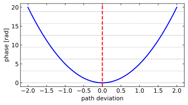

We can demonstrate that all paths except the shortest one interfere destructively using Feynman’s path integral formulation. In this approach, light takes all possible paths between points A and B, with each path contributing an amplitude with phase \(e^{iS/\hbar}\), where \(S\) is the action proportional to the optical path length: \(S = kL\) where \(k = 2\pi/\lambda\) is the wave number.
To understand why non-minimal paths cancel out, let’s denote the minimal path as \(x_0(t)\) and nearby paths as \(x_0(t) + \delta x(t)\), where \(\delta x(t)\) represents small deviations. The action for these perturbed paths expands as: \[S[x_0 + \delta x] = S[x_0] + \frac{\delta S}{\delta x}\bigg|_{x_0} \delta x + \frac{1}{2}\frac{\delta^2 S}{\delta x^2}\bigg|_{x_0} (\delta x)^2 + ...\]
Since \(x_0\) is the extremal path (according to Fermat’s principle), we have \(\frac{\delta S}{\delta x}\bigg|_{x_0} = 0\). This means the first-order term vanishes, leaving the quadratic term as the leading contribution to the phase difference:
This quadratic dependence is crucial: as we move away from the minimal path, the phase difference increases as the square of the deviation \(\delta x\). When we consider a specific deviation \(\delta x_c\) where \(\Delta\phi = \pi\), paths will contribute with exactly opposite phases compared to the minimal path, leading to destructive interference:
For even larger deviations, the phase differences continue to increase, creating alternating bands of constructive and destructive interference. When summed over all possible paths, these rapidly varying phases cancel each other out.
For paths far from the minimal one, the destructive interference is even more pronounced. Mathematically, we can demonstrate this by considering a continuous distribution of paths with optical path lengths \(L\). The total amplitude contribution from these paths is given by:
\[A = \int e^{ikL(x)} dx\]
For non-minimal paths, we can parametrize the path length as \(L(x) = L_0 + \alpha(x-x_0)^2\) for some constant \(\alpha\), where \(x_0\) corresponds to the minimal path. The amplitude becomes:
The key insight is that the amplitude scales as \(1/\sqrt{k\alpha}\), which means that as the curvature \(\alpha\) of the path length function increases (as happens far from the minimal path), the contribution to the total amplitude diminishes. This mathematically proves why non-minimal path regions contribute negligibly to the overall path integral.
This cancellation mechanism explains why light appears to follow only the path of least time in ray optics. The mathematics shows that constructive interference occurs only for paths very close to the minimal path, while all other paths destructively interfere with their neighbors. This phenomenon emerges naturally from wave properties without requiring quantum mechanical constants like ℏ. We can express this classically by setting \(S = kL\) and observing how path differences relative to the wavelength create interference patterns.
Code
from matplotlib import cm# Parametersnum_paths =100min_path_index = num_paths //2path_deviation = np.linspace(-2, 2, num_paths) # Deviation from minimal pathalpha =5# Curvature parameter controlling phase variation rate# Calculate phase for each path (quadratic dependence on deviation)phases = alpha * path_deviation**2# Set up the figurefig, ax = plt.subplots(figsize=get_size(14, 8))# Plot phase vs path deviation with a simple blue line and pointsax.plot(path_deviation, phases, '-', color='blue', linewidth=2)# Highlight the minimal pathax.axvline(x=0, color='r', linestyle='--', linewidth=2, label='Minimal path')# Highlight paths near minimal pathnear_minimal = np.abs(path_deviation) <0.3#ax.scatter(path_deviation[near_minimal], phases[near_minimal],# color='green', s=70, label='Near minimal path', zorder=3)# Set labels and gridax.set_xlabel('path deviation')ax.set_ylabel('phase [rad]')# Add horizontal lines at multiples of π to show constructive/destructive interferencefor i inrange(int(np.max(phases)/np.pi) +1):if i ==0: ax.axhline(y=i*np.pi, color='k', linestyle='-', alpha=0.2, label='Constructive interference')elif i %2==0: ax.axhline(y=i*np.pi, color='k', linestyle='-', alpha=0.2)else: ax.axhline(y=i*np.pi, color='k', linestyle='--', alpha=0.2, label='Destructive interference'if i==1elseNone)plt.tight_layout()plt.show()

Figure 1— Visualization of path phases in Fermat’s principle. The figure shows how the phase varies with path deviation from the minimal path (marked by the vertical red line at zero). The quadratic relationship between phase and path deviation demonstrates why paths near the minimal one constructively interfere (similar phases), while non-minimal paths tend to cancel through destructive interference (rapidly varying phases).